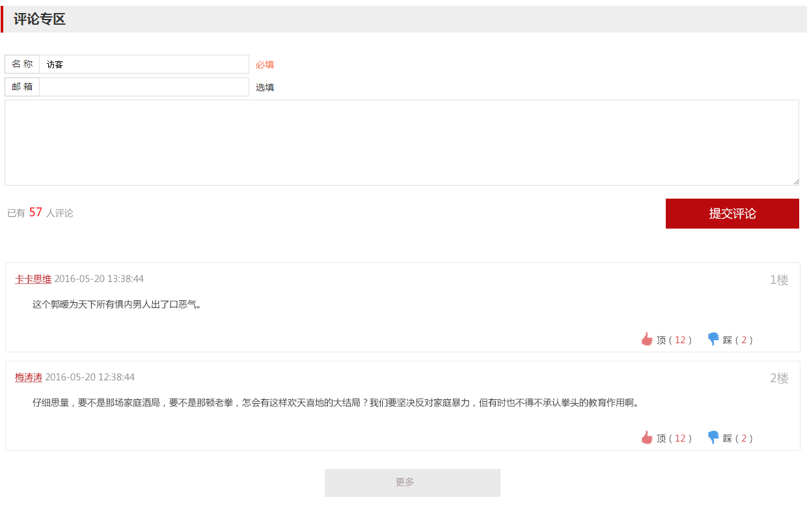

搜索
文化艺术
|
公共文化
|
非物质文化遗产
|
文化产业
首页
新闻中心
最新新闻
行业资讯
政策法规
文化活动
培训讲座
展览
群文赛事
文化资源展馆
文化艺术
公共文化
非物质文化遗产
文化产业
文化设施
场馆预订
优秀馆站推荐
网上文博会
文化地标
文化保税区
文化产业园
孟母文化健康城
文化志愿者
首页
>
文化资源展馆
>
戏剧
>
戏曲
>
晋剧
>
打金枝

© 2005－2015 Shanxi Yunpingtai.com, All Rights Reserved |
关于我们
|
网站邮箱
|
网站地图
|
友情链接
|
本网声明
|